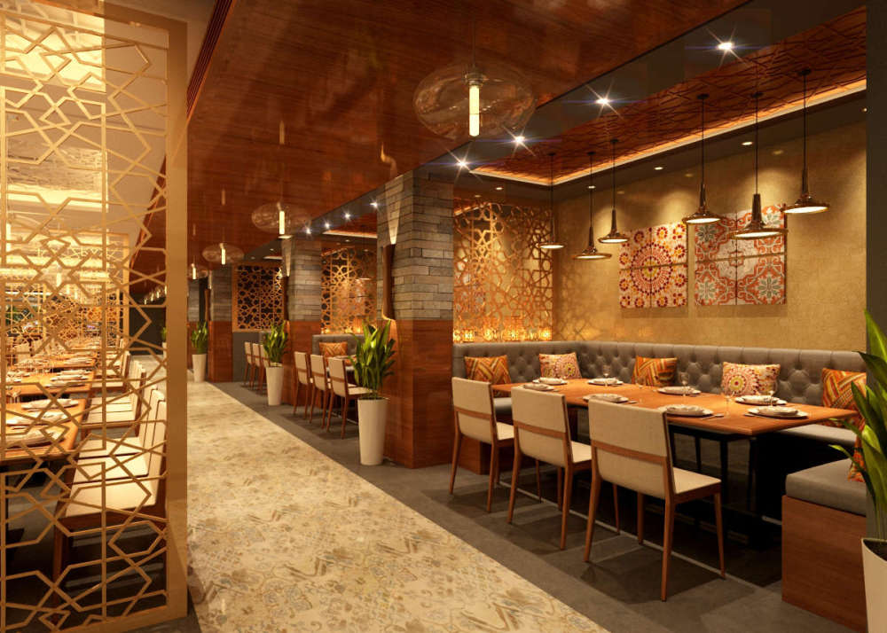
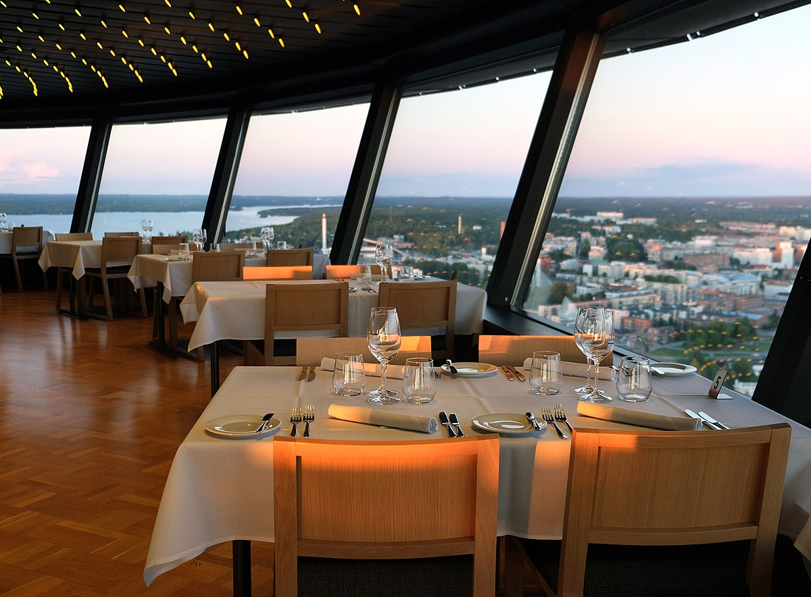
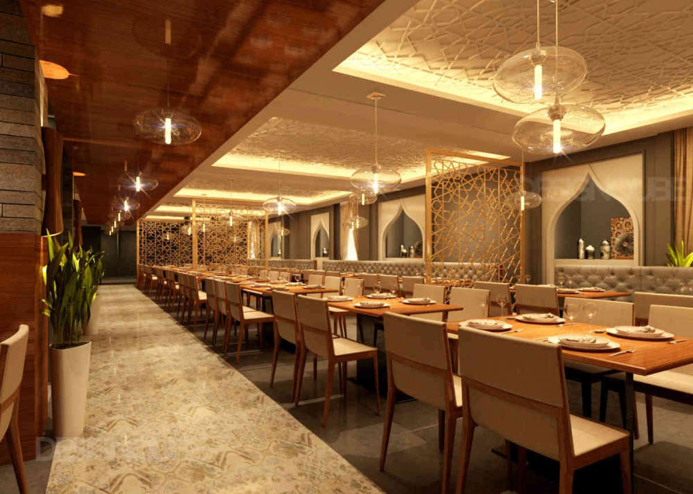
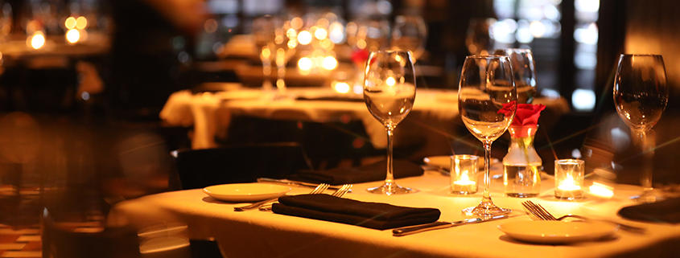
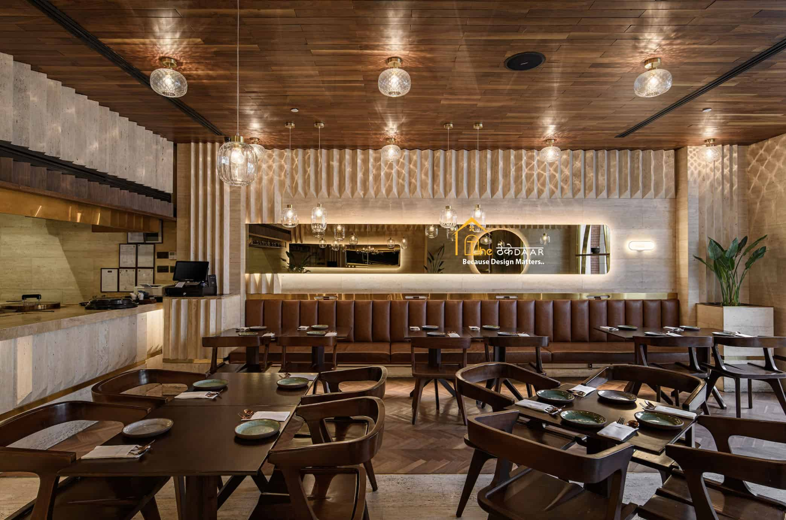
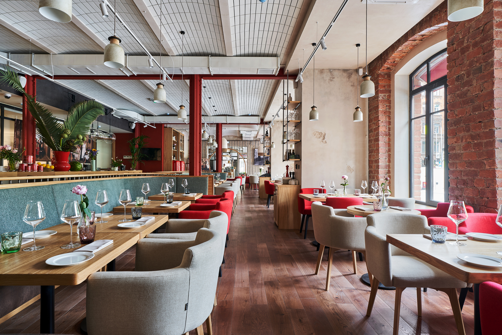

We are elated to announce that Atelier has been bestowed the illustrious title of "Best ongoing Restaurant" by the esteemed Local Culinary Association. Our esteemed head chef, Monica Geller, extends heartfelt gratitude to our devoted team and cherished patrons. Join us in an opulent celebration with exclusive menu offerings inspired by our award-winning dishes.
This month, the Bon Appétit magazine has elegantly featured Atelier, praising our unique farm-to-table approach. Critics have lauded our signature creations, including the exquisite smoked lamb and our decadent homemade desserts. We invite you to procure a copy to explore the inspiration behind our culinary philosophy.
At Atelier, every meal tells a story. From ancient cooking techniques to time-honored flavors, we bring the past to life with each bite. Experience heritage like never before with dishes rooted in history and perfected over time. Your taste buds are in for a journey through the ages!
We may have history in our bones, but our menu is anything but old-fashioned! Combining classic culinary traditions with contemporary flair, Atelier offers a dining experience where old-world elegance meets new-world excitement. Taste the past, savor the present!
This is where culinary artistry meets timeless elegance. Nestled in the heart of city, we offer a refined dining experience that celebrates the finest seasonal ingredients, expertly crafted into exquisite dishes by our renowned chefs. Your every visit will be a sophisticated journey of taste and indulgence. We invite you to dine with us and savor the extraordinary.








Atelier, a renowned restaurant celebrated for its culinary excellence,
has been under the capable leadership of women for three generations.
From a young age, she was immersed in the vibrant atmosphere of the kitchen,
passed down through generations while also developing her unique approach to fine dining.
Her grandmother, the founder, had established Atelier with a focus on local ingredients and a
commitment to the art of slow cooking.Now, as the third-generation owner, she blends her deep respect for tradition with a fresh,
introducing sustainable practices and experimenting with global flavors.
Under her leadership,
Atelier has evolved into not just a restaurant but a culinary experience, attracting food enthusiasts
from around the world. Today, Atelier stands as a testament to the strength and vision
of women-led businesses, where passion for food and family heritage continues to thrive under her stewardship.